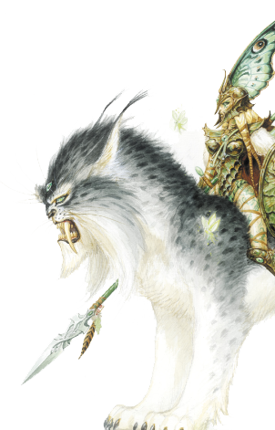

Лесной Союз
Эльфы – мирные, исполненные грации существа, живущие в гармонии с землей и лесами. Они слушают глас Силанны, дракона земли. Ее древняя мудрость и спокойный нрав отражаются в их отношении к жизни и религии. Друиды, воины и охотники, одаренные маги природы, они дружат со всеми волшебными существами Чащи (лютоволками, единорогами, грифонами) и духами природы (дриадами, феями, пикси, треантами и другим). Не доверяя городам, они живут так, как жили их предки, взяв на себя ответственность за леса и их жителей, и не медлят, когда нужно наказать тех, кто причиняет им вред.
Другие имена: Лесные эльфы
Основные цвета: зеленый
Страна/Королевство: Ироллан, лесной лабиринт
Столица: У них четыре столицы на четыре времени года – Сирис Талла, Сирис Ваниэль, Сирис Лотра и Сирис Винна.
Религия
Большинство эльфов ищет защиты у Дракона Земли. Сами же они стали хранителями земли и всего живого на ней, будь то растения или животные.
Магия
Благодаря Земле, все существует в гармонии, будь то горы, растения или животные. Их символы – камень, дерево и плоть. Земля также символизирует инстинкты и осознание себя в этом мире. Эльфы прибегают к магии земли, чтобы защитить творение Асхи, ее сад, и преклоняются перед Первым Древом. Магия дается им естественно – ведь они знают, что пока их помыслы чисты, ничто им не помешают. Они – защитники самой жизни.